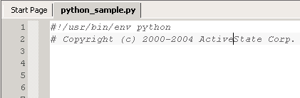
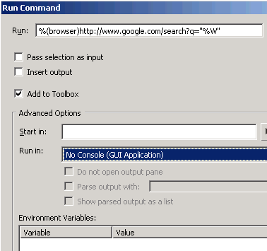
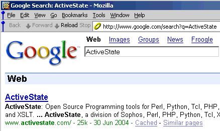
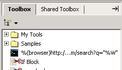

In the Editor Pane, place the cursor within the word you want
to search.

Open the Run
Command dialog box (Tools|Run Command).
Configure as shown.

When you click Run, the Google search
results for the term are displayed in the browser.

The run command is stored in the Toolbox for
re-use.